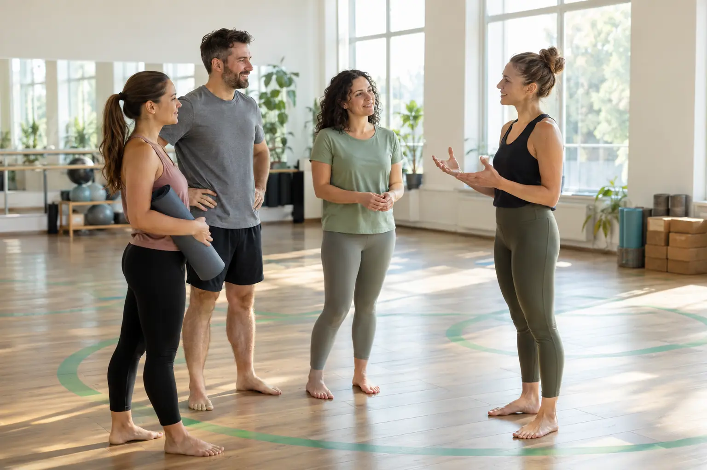

Treniruotės pasirinkimas: individualus, grupinis, pilateso ar jogos formatas
Autorius: Madbeauty redakcija · Numatyta 2026 m. lapkričio 3 d. 10:00 (Lietuvos laiku)
Atskirkite individualią ar grupinę treniruotę nuo pasirinktos veiklos – Pilateso, jogos ar kitos krypties – ir palyginkite pamokos turinį, dėmesį bei sąlygas.

Individuali ar grupinė treniruotė nusako, kaip organizuojamas užsiėmimas; Pilatesas ar joga – kokią veiklos kryptį renkatės. Tai skirtingi pasirinkimai: pavyzdžiui, Pilateso pamoka gali būti individuali arba grupinė. Rinkdamiesi palyginkite ir pamokos turinį, ir tai, kiek norite tiesioginio instruktoriaus dėmesio.
Ką pasako veiklos pavadinimas
Pilateso kryptis gali būti siejama su pusiausvyra, laikysena, jėga ir lankstumu. Taip Pilatesas pristatomas NHS pradžiamokslio vaizdo apraše. Aprašo 45 minučių trukmė taikoma tam konkrečiam vaizdo įrašui, o ne visoms Pilateso pamokoms.
„Joga“ taip pat neapibūdina vienodo užsiėmimo: gali skirtis pozos, intensyvumas ir kvėpavimo ar dėmesio dalys. NCCIH jogos apžvalga pabrėžia jogos formų įvairovę. Todėl vien pavadinimo neužtenka nuspręsti, ką veiksite konkrečioje pamokoje.
Trijų galimų pasirinkimų palyginimas
- Individualus Pilatesas – Pilateso veikla individualiu formatu. Jei jums svarbu daugiau galimybių klausti ir gauti paaiškinimų, pasitikrinkite, ką apima konkreti pamoka ir kaip aprašomas instruktoriaus dėmesys.
- Grupinis Pilatesas – ta pati veiklos kryptis, bet užsiėmime dalyvauja grupė. Prieš rinkdamiesi palyginkite grupės dydį, numatytą lygį ir ar pamokos apraše paaiškinta, kaip pateikiami nurodymai.
- Grupinė joga – grupinis formatas, kurio turinys priklauso nuo konkrečios jogos pamokos. Patikrinkite aprašytas pozas, intensyvumą, kvėpavimo ar dėmesio dalis ir kam pamoka skirta.
Pavyzdys pradedančiajam
Įsivaizduokite žmogų, kuris dar nepasirinko veiklos ir pirmiausia nori suprasti užsiėmimo eigą. Jis gali palyginti individualaus ir grupinio Pilateso pamokų aprašus: ar svarbiau daugiau progų klausti, ar patogus bendras laikas. Jei labiau domina pozos ir kvėpavimo dalys, greta gali įvertinti konkrečios jogos pamokos aprašą. Tai pasirinkimo pavyzdys, o ne teiginys apie visiems tinkamiausią metodą.
Greitas palyginimas prieš apsisprendžiant
- Veikla: ar jus domina Pilateso kryptis, jogos užsiėmimas, ar norite pirmiausia palyginti pamokų turinį?
- Organizavimas: ar renkatės individualų formatą, ar grupę? Grupinės pamokos atveju patikrinkite dydį ir numatytą lygį.
- Praktinės sąlygos: sutikrinkite pamokos aprašą, įrangą, laiką ir kainą. Nepriskirkite vienai krypčiai gydymo rezultato ar pranašumo, kurio konkretus aprašas nepagrindžia.
Susiję gidai
Šaltiniai
- WHO · fizinis aktyvumas · www.who.int
- NCCIH · joga · www.nccih.nih.gov
- NHS · pilateso ir jogos pamokų formatai · www.nhs.uk
- NHS: Pilates formato apibrėžimas · www.nhs.uk